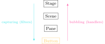

Model
- Events form a hierarchy (
MouseEvent,KeyEvent,ActionEvent, …), each with its own attributes (position, key, source) and sub-types (MOUSE_CLICKED,KEY_PRESSED). - A handler implements
EventHandler<T extends Event>, whose only method isvoid handle(T e). It is registered on a node withaddEventHandler(type, h)or with convenience methodssetOnAction,setOnMouseClicked,setOnKeyPressed. - The target is the node that has the keyboard focus (key events) or the topmost node under the cursor (mouse events).
- Dispatch chain: from the stage to the target (capturing, intercepted by filters registered with
addEventFilter), then back from the target to the stage (bubbling, handlers).e.consume()stops the propagation.
Ways to write a handler
class Clicker implements EventHandler<ActionEvent> { // external class
public void handle(ActionEvent e) { System.out.println("click"); }
}
btn.setOnAction(new Clicker());
// anonymous inner class
btn.setOnAction(new EventHandler<ActionEvent>() {
// sees the outer fields
public void handle(ActionEvent e) { counter++; }
});
btn.setOnAction(e -> counter++); // lambda (Java 8)Inner and anonymous classes can access the members of the enclosing object, which keeps state in one place and improves encapsulation.
Picture

Intuition
Instead of asking "what next?", the program says "call me when this happens". The main loop belongs to the library.
Pitfall
Handlers run on the single JavaFX application thread: a long computation inside one freezes the whole window. Long work goes to a background thread, and only the UI update comes back.